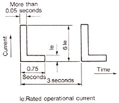

| Frame | 80C | 100C | 125C | 150C | 200C | |||
|---|---|---|---|---|---|---|---|---|
| TYPE | Electromagnetic contactor without enclosure | Non- reversible | H80C | H100C | H125C | H150C | H200C | |
| Reversible | H80C-R | H100C-R | H125C-R | H150C-R | H200C-R | |||
| Electromagnetic starter | Without enclosure | Non-reversible | H80C-T | H100C-T | H125C-T | H150C-T | H200C-T | |
| Reversible | H80C-RT | H100C-RT | H125C-RT | H150C-RT | H200C-RT | |||
| With enclosure | Non-reversible | SH80C-T | SH100C-T | SH125C-T | SH150C-T | SH200C-T | ||
| Reversible | SH80C- RT |
SH100C- RT |
SH125C- RT |
SH150C- RT |
SH200C- RT |
|||
| Thermal overload relay | TR80B-1E | TR150B-1E | TR250B-1E | |||||
| Rated insulation voltage | AC660V | |||||||
| Max. rated capacity of motor | JIS and JEM | Rated operational current (A) AC3 |
200-220V | 80 | 100 | 125 | 150 | 180 |
| 380-440V | 80 | 100 | 125 | 150 | 180 | |||
| 500-550V | 72 | 72 | 72 | 80 | 145 | |||
| Three-phase motor (kW) AC3 and AC2 |
200-220V | 19 | 25 | 30 | 37 | 45 | ||
| 380-440V | 37 | 50 | 60 | 75 | 90 | |||
| 500-550V | 45 | 45 | 45 | 55 | 90 | |||
| IEC | Rated operational current (A) AC3 |
220-240V | 80 | 105 | 126 | 150 | 182 | |
| 380-440V | 80 | 100 | 125 | 150 | 180 | |||
| 500-550V | 72 | 72 | 72 | 80 | 145 | |||
| Three-phase motor (kW) AC3 |
220-240V | 22 | 30 | 37 | 45 | 55 | ||
| 380-440V | 37 | 50 | 60 | 75 | 90 | |||
| 500-550V | 45 | 45 | 45 | 55 | 90 | |||
| Single-phase motor (kW) AC3 JIS, JEM and IEC |
100-110V | — | — | — | — | — | ||
| 200-220V | — | — | — | — | — | |||
| Inching (kW) AC4 (Inching ratio 50%, electrical life 0.1 million times) JIS, JEM and IEC |
200-240V | 13 | 13 | 15 | 22 | 30 | ||
| 380-440V | 19 | 19 | 22 | 30 | 37 | |||
| Rated capacity for resistance load (A) AC1 (Electrical life 0.5 million times) JIS, JEM and IEC |
200-240V | 120 | 135 | 150 | 200 | 260 | ||
| 380-440V | 120 | 135 | 150 | 200 | 260 | |||
| Rated thermal current (1th) A | Without enclosure | 120 | 135 | 150 | 200 | 260 | ||
| With enclosure | 80 | 105 | 125 | 150 | 180 | |||
| Characteristics of operation coil |
Coil burden (max.) (V.A) 50/60Hz |
Pick-up | 490/420 | 400/400 | 480/480 | |||
| Hold-in | 50/40 | 8/8 | 9/9 | |||||
| Coil comsumption (W) (Mean) | 9.5 | 7 | 8 | |||||
| Pick-up voltage (% of rated voltage) (Mean) | 75 | 70 | 70 | |||||
| Drop-out voltage (% of rated voltage) (Mean) | 58 | 45 | 45 | |||||
| Operating time (ms) (reference value) |
Pick-up | 10-25 | 30-50 | 30-50 | ||||
| Drop-out | 10-30 | 20-40 | 20-45 | |||||
| Auxiliary contact specification | Number | Standard | 2NO2NC | |||||
| Maximum | 4NO4NC (3NO3NC... Reversible) | |||||||
| Rated operational current (A) | 200-240V | 2 (Twin contact) | ||||||
| 380-440V | 1 (Twin contact) | |||||||
| Rated themal current (A) | 10 (Twin contact) | |||||||
| Application models | With mechanical interlock | ● | ● | ● | ● | ● | ||
| With 2E themal overload relay | ○ | ○ | ○ | ○ | ○ | |||
| With three-element themal overload relay | ○ | ○ | ○ | ○ | ○ | |||
| With latch | ○ | ○ | ○ | ○ | ○ | |||
| DC operation | ○ | ○ | ○ | ○ | ○ | |||
| DIN rail mounting | — | — | — | — | — | |||
Note
- *1
- The ratings of the 200V class in the parenthesis when frames 20 and 50 are provided with an enclosure.
- *2
- The rated thermal current applies to electromagnetic contactors.
- *3
- The pick-up and drop-out voltages apply to 200V 60Hz power source. In case of 50Hz, the figures for frame 8C - 125C are about 10% smaller and for frame 150C - 800C are about the same.
- *4
- Application of Category AC3 and AC2 to the reversible electromagnetic contactors and starters shall be limited to regular reversible operation in which a motor starts reverse rotation after it has once stopped. Category AC4 is applicable when the motor starts reverse rotation before it has completely stops.
- *5
- The mark (●) in the application indicates that they are standard.
- *6
- Operating time is a reference value where 200V 50Hz is applied to AC200V coil. Operating time varies with coil voltage, frequency and phase so it is unsuitable for timing use.
- *7
- Testing conditions of electrical life (Category AC3) :
The making and breaking currents and operating frequency of the electrical life are tested as shown in the right drawing according to test conditions of JIS C8201-4-1, JEM 1038 and IEC60947-4-1. - *8
- Themal overload relay for 220-240V 7.5kW is TR50B-1E.
- *9
- The minimum rating of auxiliary contact is 48V 10mA for the single contact and 24V 10mA for the twin contact.
